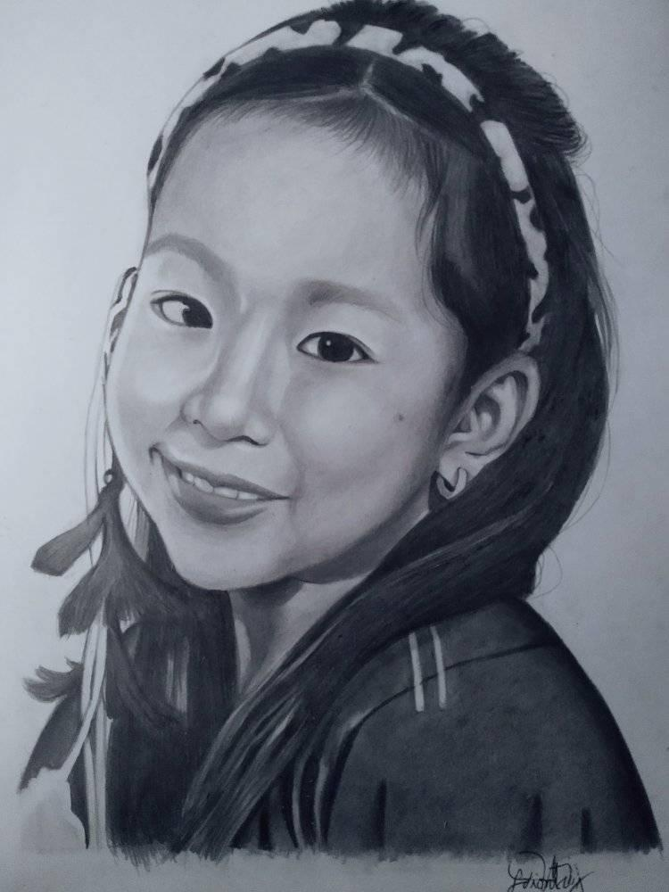
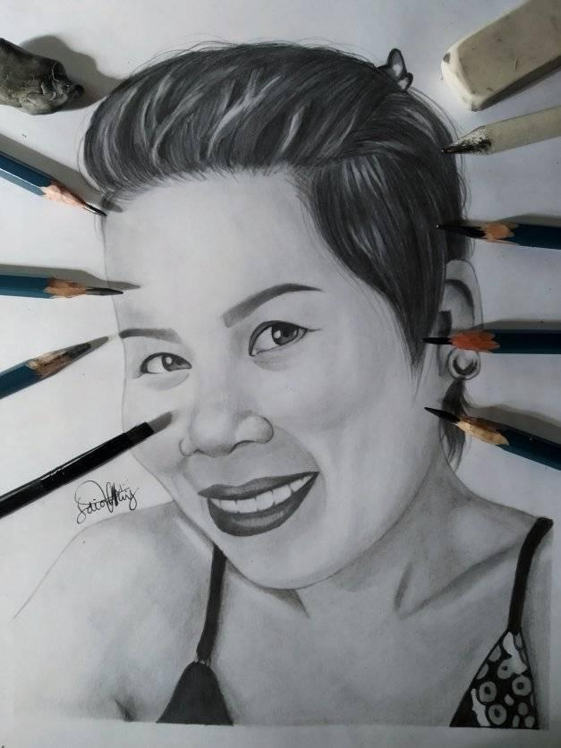
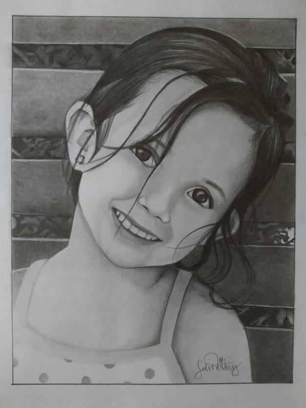

Gallery






Doing art was really my passion since I was a pre-schooler. When I was in kindergarten, I tried to compete in poster-making contest for the first time but I failed. Although I did not win the competition, I still tried my best to prove that I can be better. I never thought that it would be a starting line in my journey as an artist. I joined poster-making contests in Elementary and even until High School.
My greatest achievement is that I am able to represent our school in different levels of the competition and make profit out of it. It was only this year when I discovered that I can also do portraits.
Doing portrait is indeed time consuming but I still enjoyed the process because it enables my body and mind to be at rest. I am looking forward to discover new art styles and techniques, and that someday I could share my knowledge and skills to the future generations.